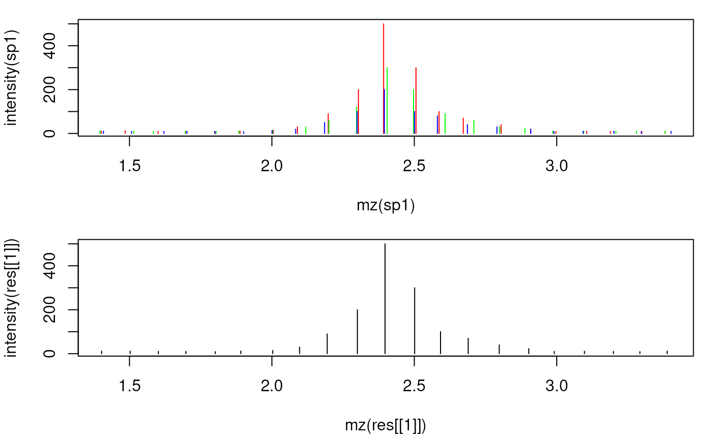
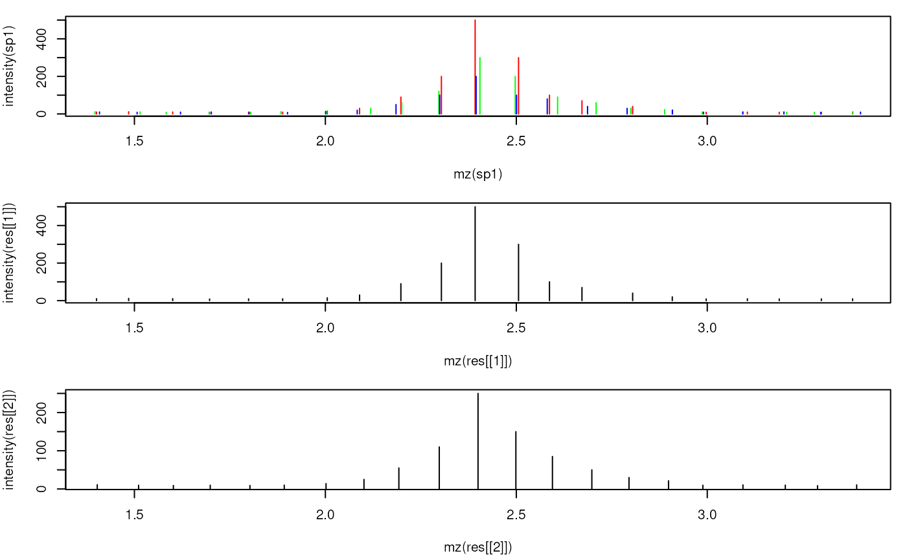

combineSpectra combines spectra in a MSnExp, OnDiskMSnExp
or MSpectra object applying the summarization function fun to sets
of spectra defined by a factor (fcol parameter). The resulting combined
spectrum for each set contains metadata information (present in mcols and
all spectrum information other than mz and intensity) from the first
spectrum in each set.
Combining of spectra for MSnExp or OnDiskMSnExp objects is performed by default for each file separately, combining of spectra across files is thus not possible. See examples for details.
# S4 method for class 'MSnExp'
combineSpectra(
object,
fcol = "fileIdx",
method = meanMzInts,
...,
BPPARAM = bpparam()
)
# S4 method for class 'MSpectra'
combineSpectra(object, fcol, method = meanMzInts, fun, ...)For MSpectra objects: mcols column name to be used to define
the sets of spectra to be combined. If missing, all spectra are
considered to be one set. For MSnExp/OnDiskMSnExp objects: column
in fData(object) defining which spectra to combine. See examples below
for more details.
function to be used to combine the spectra by fcol. Has to
be a function that takes a list of spectra as input and returns a single
Spectrum. See meanMzInts() for details.
additional arguments for fun.
For MSnExp/OnDiskMSnExp objects: parallel processing setup
to perform per-file parallel spectra combining. See bpparam() for more
details.
Deprecated use method instead.
A MSpectra or MSnExp object with combined spectra. Metadata
(mcols) and all spectrum attributes other than mz and intensity
are taken from the first Spectrum in each set.
meanMzInts() for a function to combine spectra.
set.seed(123)
mzs <- seq(1, 20, 0.1)
ints1 <- abs(rnorm(length(mzs), 10))
ints1[11:20] <- c(15, 30, 90, 200, 500, 300, 100, 70, 40, 20) # add peak
ints2 <- abs(rnorm(length(mzs), 10))
ints2[11:20] <- c(15, 30, 60, 120, 300, 200, 90, 60, 30, 23)
ints3 <- abs(rnorm(length(mzs), 10))
ints3[11:20] <- c(13, 20, 50, 100, 200, 100, 80, 40, 30, 20)
## Create the spectra.
sp1 <- new("Spectrum1", mz = mzs + rnorm(length(mzs), sd = 0.01),
intensity = ints1, rt = 1)
sp2 <- new("Spectrum1", mz = mzs + rnorm(length(mzs), sd = 0.01),
intensity = ints2, rt = 2)
sp3 <- new("Spectrum1", mz = mzs + rnorm(length(mzs), sd = 0.009),
intensity = ints3, rt = 3)
spctra <- MSpectra(sp1, sp2, sp3,
elementMetadata = DataFrame(idx = 1:3, group = c("b", "a", "a")))
## Combine the spectra reporting the maximym signal
res <- combineSpectra(spctra, mzd = 0.05, intensityFun = max)
res
#> MSpectra with 1 spectra and 2 metadata column(s):
#> msLevel rtime peaksCount | idx group
#> <integer> <numeric> <integer> | <integer> <character>
#> 1 1 1 191 | 1 b
## All values other than m/z and intensity are kept from the first spectrum
rtime(res)
#> 1
#> 1
## Plot the individual and the merged spectrum
par(mfrow = c(2, 1), mar = c(4.3, 4, 1, 1))
plot(mz(sp1), intensity(sp1), xlim = range(mzs[5:25]), type = "h", col = "red")
points(mz(sp2), intensity(sp2), type = "h", col = "green")
points(mz(sp3), intensity(sp3), type = "h", col = "blue")
plot(mz(res[[1]]), intensity(res[[1]]), type = "h",
col = "black", xlim = range(mzs[5:25]))

## Combine spectra in two sets.
res <- combineSpectra(spctra, fcol = "group", mzd = 0.05)
res
#> MSpectra with 2 spectra and 2 metadata column(s):
#> msLevel rtime peaksCount | idx group
#> <integer> <numeric> <integer> | <integer> <character>
#> 1 1 1 191 | 1 b
#> 2 1 2 191 | 2 a
rtime(res)
#> 1 2
#> 1 2
## Plot the individual and the merged spectra
par(mfrow = c(3, 1), mar = c(4.3, 4, 1, 1))
plot(mz(sp1), intensity(sp1), xlim = range(mzs[5:25]), type = "h", col = "red")
points(mz(sp2), intensity(sp2), type = "h", col = "green")
points(mz(sp3), intensity(sp3), type = "h", col = "blue")
plot(mz(res[[1]]), intensity(res[[1]]), xlim = range(mzs[5:25]), type = "h",
col = "black")
plot(mz(res[[2]]), intensity(res[[2]]), xlim = range(mzs[5:25]), type = "h",
col = "black")

## Combining spectra of an MSnExp/OnDiskMSnExp objects
## Reading data from 2 mzML files
sciex <- readMSData(dir(system.file("sciex", package = "msdata"),
full.names = TRUE), mode = "onDisk")
## Filter the file to a retention time range from 2 to 20 seconds (to reduce
## execution time of the example)
sciex <- filterRt(sciex, rt = c(2, 20))
table(fromFile(sciex))
#>
#> 1 2
#> 64 64
## We have thus 64 spectra per file.
## In the example below we combine spectra measured in one second to a
## single spectrum. We thus first define the grouping variable and add that
## to the `fData` of the object. For combining, we use the
## `consensusSpectrum` function that combines the spectra keeping only peaks
## that were found in 50% of the spectra; by defining `mzd = 0.01` all peaks
## within an m/z of 0.01 are evaluated for combining.
seconds <- round(rtime(sciex))
head(seconds)
#> F1.S008 F1.S009 F1.S010 F1.S011 F1.S012 F1.S013
#> 2 3 3 3 3 4
fData(sciex)$second <- seconds
res <- combineSpectra(sciex, fcol = "second", mzd = 0.01, minProp = 0.1,
method = consensusSpectrum)
table(fromFile(res))
#>
#> 1 2
#> 19 19
## The data was reduced to 19 spectra for each file.